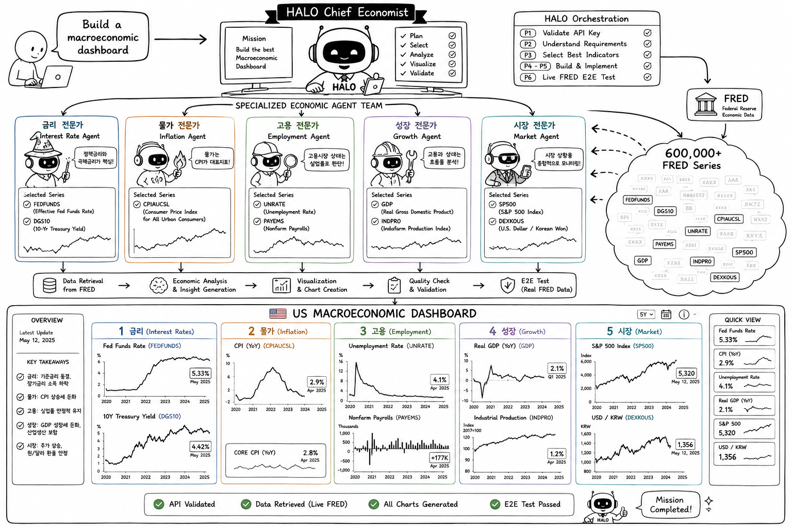

FRED 경제 매크로 대시보드oh-my-haloagent · HALO 워크플로우
미국 연준 FRED의 실데이터로 거시경제 대시보드를 만든다. 읽고 끝나는 예제가 아니라, 실데이터가 흐르는 돌아가는 제품이 손에 남는다.
무엇을 만드나
미국 연준 FRED의 실데이터로 거시경제 한눈 대시보드를 만든다. 금리·물가·고용·성장·시장 — 다섯 축의 대표 지표를 차트로 모은다. API 키 하나만 넣으면 실데이터가 들어오는, 돌아가는 대시보드가 끝에 남는다.
이 실습으로 얻는 것
이 트랙을 끝내면 다음을 직접 경험하게 된다.
- 요구사항 한 줄이 RTM(Requirements Traceability Matrix)으로 구조화되는 과정
- Main Agent가 P1 → P9를 컨텍스트 단절 없이 연속 실행하는 흐름
- Phase 간 통신이 대화가 아니라 파일(File = Interface)로 이뤄지는 방식
- 실패가 JUDGE의 분류 → LOOPBACK으로 구조적으로 복구되는 모습
먼저 시리즈 6 — HALO Workflow를 읽고 오면, 각 Phase에서 일어나는 일이 훨씬 또렷하게 보인다.
설치 가이드
Windows 10/11 기준. 아래는 PowerShell에서 실행한다 — 프롬프트가 PS C:\>로 시작하면 PowerShell이다. 관리자 권한은 필요 없다.
1. Claude Code (필수)
공식 네이티브 설치 스크립트를 실행한다. Node.js는 필요 없고, 이후 자동 업데이트된다.
irm https://claude.ai/install.ps1 | iex설치가 끝나면 터미널을 새로 열고 확인한다.
claude --version계정. Claude Code는 Pro·Max·Team·Enterprise 또는 Console(API) 계정이 필요하다 — 무료 플랜으로는 쓸 수 없다.
2. Git for Windows (권장)
Git이 있으면 Claude Code가 Bash 도구를 쓸 수 있다(없으면 PowerShell로 대체). 레포 복제에도 필요하다.
winget install --id Git.Git -egit --version설치가 끝나면 setup-agent.bat(Windows 배치)으로 .claude/ 등을 한 번에 설치하거나, .claude/ 폴더를 직접 복사한다. Codex를 함께 쓸 때만 AGENTS.md·.codex/가 추가로 필요하다 — 우선 Claude Code만으로 충분하다.
막히면. 설치 중 어디서든 막히면 Claude(claude.ai)를 열고 물어본다. 터미널에 뜬 에러 메시지를 그대로 복사해 붙여넣으면 된다.
1단계 — 템플릿으로 내 레포 만들기
이 레포는 fork가 아니라 독립된 새 레포로 시작한다.
- GitHub에서 oh-my-haloagent를 연다.
- 우측 상단 “Use this template” → “Create a new repository”를 누른다.
- 새 레포 이름을 정하고 생성한 뒤, 로컬로 복제한다.
git clone https://github.com/<you>/<your-repo>.git
cd <your-repo>2단계 — FRED API 키 발급
이번 실습은 경제 매크로 대시보드를 만든다. 데이터는 미국 연준의 FRED에서 받는다 — 무료 계정을 만들고 API 키를 발급받는다.
- FRED API Keys 페이지에서 계정을 만든다(무료).
- API 키를 발급받아 복사해 둔다.
3단계 — /halo-workflow로 만든다
FRED 지표는 수십만 개다. "주요 지표"처럼 막연히 주면 산으로 간다. 큰 카테고리를 먼저 고르고, 짧지만 구체적으로 요구한다. 언어·프레임워크 같은 기술 스택은 요구사항에 넣지 않는다 — 새 프로젝트라서 HALO가 P1에서 “무엇으로 만들까”를 직접 물어본다. 익숙한 것 하나만 답하면 되고(고민되면 “파이썬” 정도면 충분하다), 설계는 HALO가 P3에서 알아서 한다.
큰 카테고리를 먼저 정한다. 아래 다섯 카테고리를 대표 지표와 함께 요구사항에 담는다.
- 금리 — 기준금리 · 국채금리
- 물가 — 소비자물가(CPI)
- 고용 — 실업률
- 성장 — GDP · 산업생산
- 시장 — 주가지수 · 환율
다섯 카테고리를 그대로 프롬프트에 적는다.
/halo-workflow FRED API로 거시경제 대시보드를 만든다. 다음 다섯 카테고리를 카테고리별 대표 지표로 차트로 보여준다 — 금리(기준금리·국채금리), 물가(소비자물가 CPI), 고용(실업률), 성장(GDP·산업생산), 시장(주가지수·환율). FRED API 키는 내가 발급받았다.HALO가 P1에서 FRED 엔드포인트를 실제로 호출해 키가 유효한지 검증하고(제약 검증), 지표·차트를 설계·구현한 뒤, P6에서 실제 FRED API로 E2E 테스트한다.